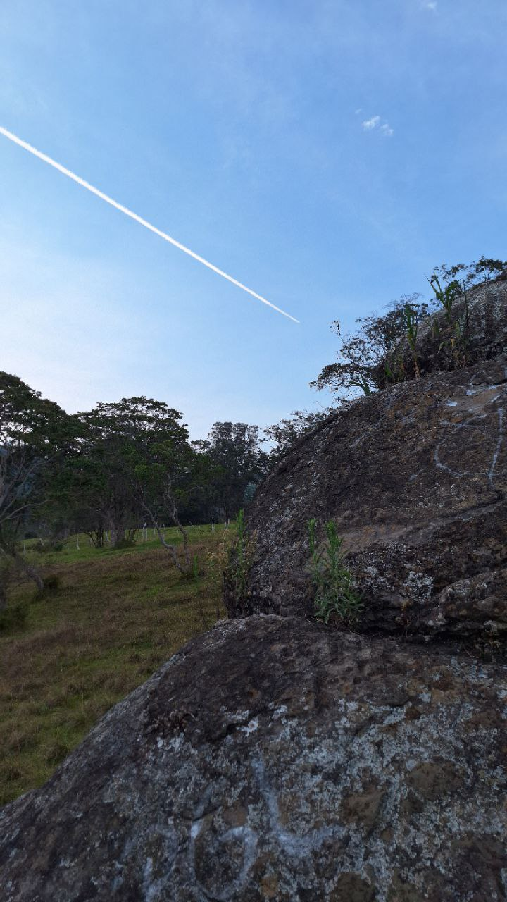
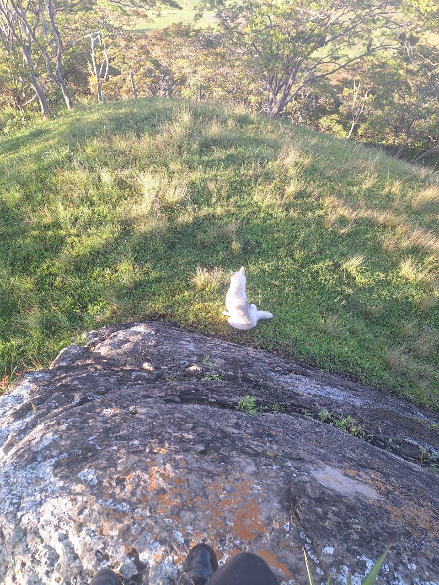
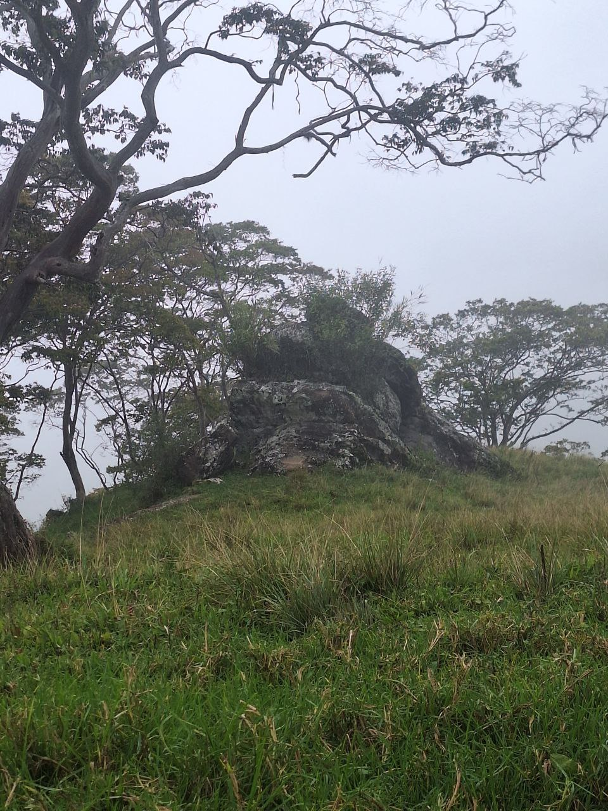
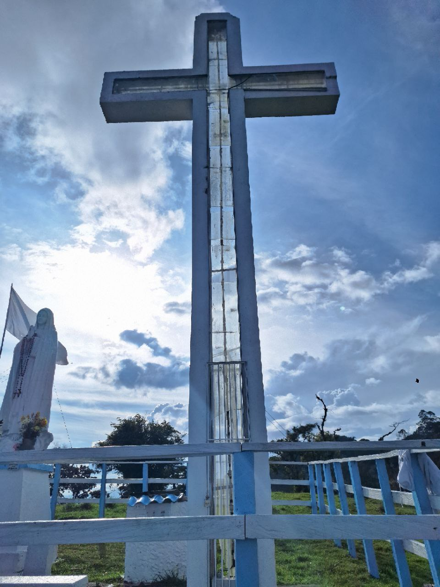
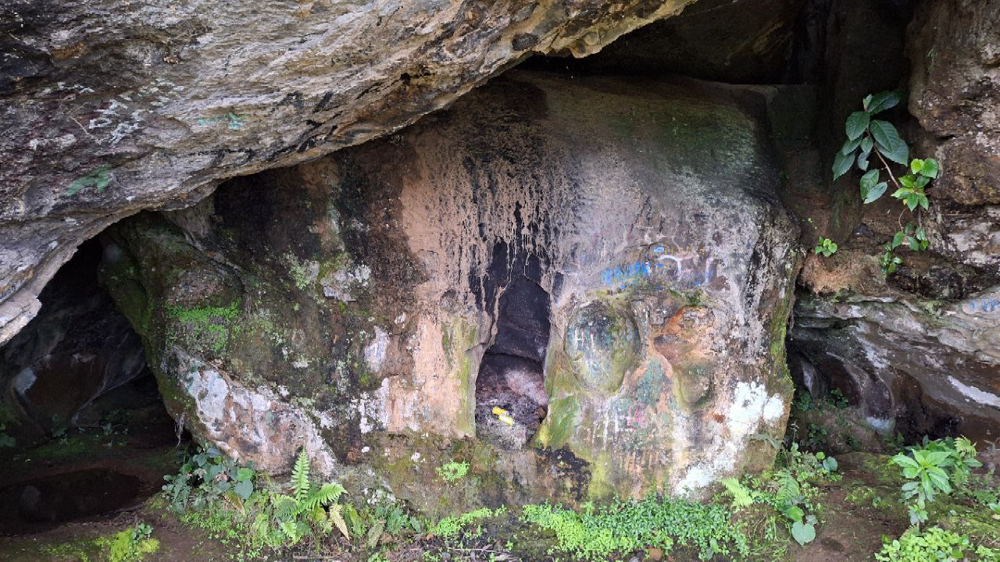
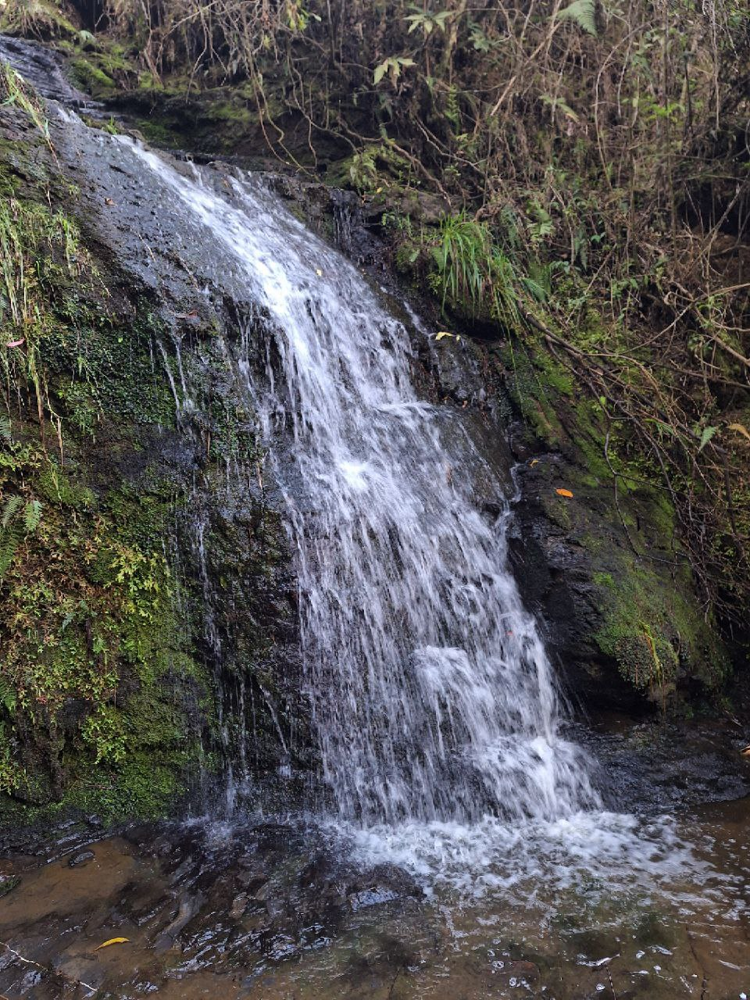
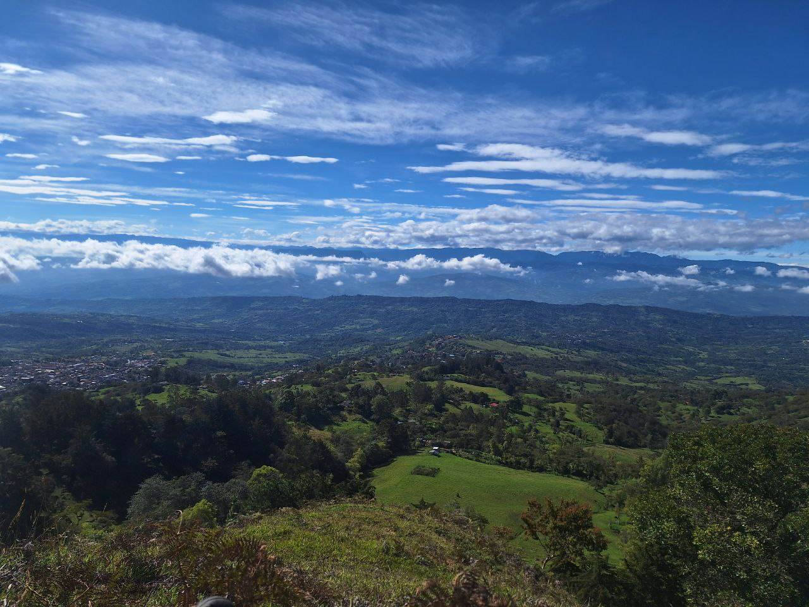
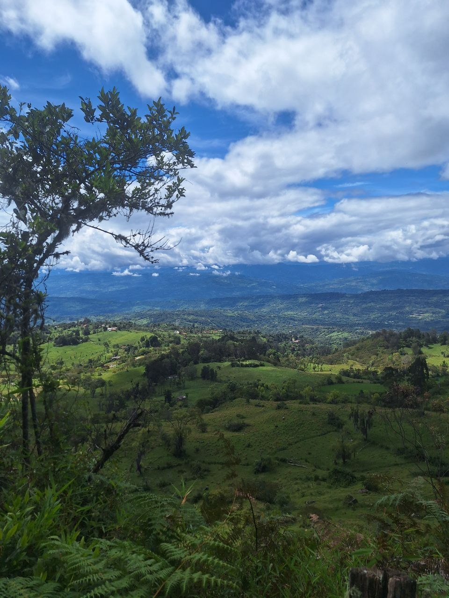
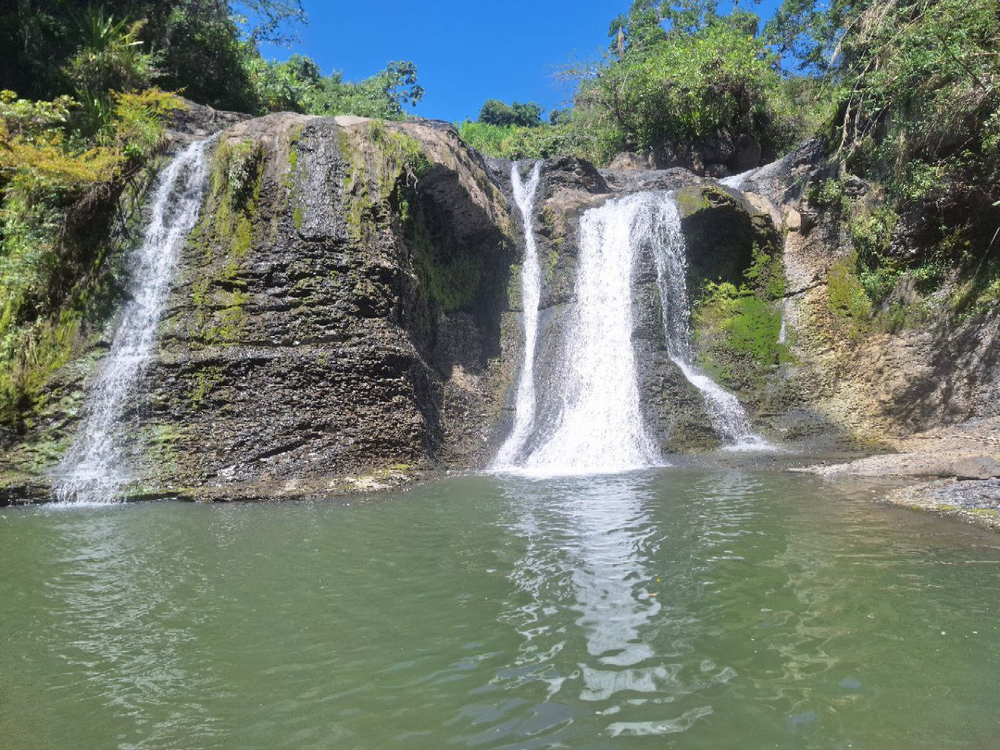

1. La piedra del Chulo
A comparación de las otras es el lugar más cercano al pueblo, se ubica a cerca de 600 metros del municipio.
Es una gran piedra en la cual, durante el amanecer se reunen los chulos.
Entre estos se encuentra uno muy dificil de ver, un chulo con la cabeza blanca y detalles rojos.



2. La Virgen
Este es el sitio mas visitado entre los que se mencionan en esta lista, se encuentra a unos 4 kilometros del municipio.
Aqui encontraremos a La Virgen de la Peña.
Una figura de la santa virgen que protege al municipio de Vélez desde la cima de la cordillera que rodea al casco urbano.
Suele ser visitada en fechas como la Semana Santa y por personas que van a hacer promesas con la Virgen para pedirle ayuda.

.jpg)
3. La cueva del Indio
Este es el lugar más lejano, se encuentra a unos 5 kilometros del municipio.
Esta casi a la misma altura de la Virgen.
La cueva se ubica en el muro de piedra que recorre lo alto del municipio.
Esta consta de diferentes secciones y pisos en donde se destacan el piso llamado la discoteca y el salon de la momia.
La cueva del Indio recibe su nombre debido a que los indigenas de la region se escondieron alli de los colonizadores.

4. El mirador de la Cueva
Este lugar se encuentra a unos 5 kilometros del municipio.
Esta encima de la cueva del Indio, tanto asi que la salida del segundo piso de la cueva lleva a este lugar.
Aqui encontraremos una maravillosa vista, donde podemos observar diversos municipios y veredas.
Es visitado usualmente por quienes van a explorar la cueva y salen por el segundo piso.
A la parte de atras de dicho mirador, a unos cuantos metros, hay una pequeña quebrada con un agua fría y una ubicacion excelentes.
>


5. Aposentos
Este lugar se encuentra a unos 10 kilometros del municipio, es el más lejano de esta lista.
Este pertenece al municipio de Chipata, parte de la provincia veleña.
Se trata de una gran quebrada con varios pozos a lo largo de su extension, es muy visitado para la recreacion y el ecoturismo.
Tambien cuenta con paisajes hermosos debido a sus caidas de agua.
No se recomienda mucho ir en epocas de lluvias ya que pueder ocurrir crecidas repentinas o crearse remolinos entre las rocas.
